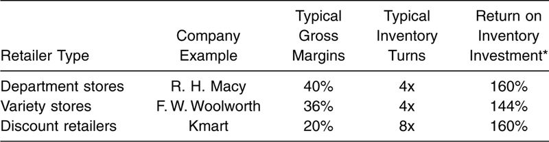
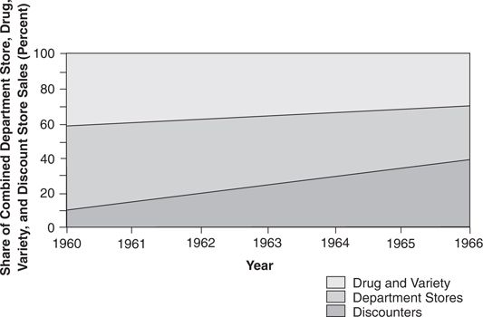
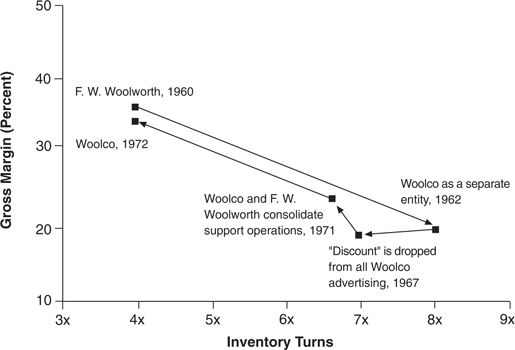

In few industries has the impact of disruptive technology been felt so pervasively as in retailing, where discounters seized dominance from traditional department and variety stores. The technology of discount retailing was disruptive to traditional operations because the quality of service and selection offered by discounters played havoc with the accustomed metrics of quality retailing. Moreover, the cost structure required to compete profitably in discount retailing was fundamentally different than that which department stores had developed to compete within their value networks.
The first discount store was Korvette’s, which began operating a number of outlets in New York in the mid-1950s. Korvette’s and its imitators operated at the very low end of retailing’s product line, selling nationally known brands of standard hard goods at 20 to 40 percent below department store prices. They focused on products that “sold themselves” because customers already knew how to use them. Relying on national brand image to establish the value and quality of their products, these discounters eliminated the need for knowledgeable salespeople; they also focused on the group of customers least attractive to mainstream retailers: “young wives of blue collar workers with young children.” 9 This was counter to the upscale formulas department stores historically had used to define quality retailing and to improve profits.
Discounters didn’t accept lower profits than those of traditional retailers, however; they just earned their profits through a different formula. In the simplest terms, retailers cover their costs through the gross margin, or markup, they charge over the cost of the merchandise they sell. Traditional department stores historically marked merchandise up by 40 percent and turned their inventory over four times in a year—that is, they earned 40 percent on the amount they invested in inventory, four times during the year, for a total return on inventory investment of 160 percent. Variety stores earned somewhat lower profits through a formula similar to that used by the department stores. Discount retailers earned a return on inventory investment similar to that of department stores, but through a different model: low gross margins and high inventory turns. Table 5.1 summarizes the three positions.
The history of discount retailing vividly recalls the history of minimill steel making. Just like the minimills, discounters took advantage of their cost structure to move upmarket and seize share from competing traditional retailers at a stunning rate: first at the low end, in brand-name hard goods such as hardware, small appliances, and luggage, and later in territory further to the northeast such as home furnishings and clothing. Figure 5.2 illustrates how stunning the discounters’ invasion was: Their share of retailing revenues in the categories of goods they sold rose from 10 percent in 1960 to nearly 40 percent a scant six years later.
Table 5.1 Different Pathways to Profits

* Calculated as Margins x Turns, in other words, the total of the margins earned through successive turnovers each year. Source: Annual corporate reports of many companies in each category for various years.
Figure 5.2 Gains in Discount Retailers’ Market Share, 1960–1966

Source: Data are from various issues of Discount Merchandiser.
Just as in disk drives and excavators, a few of the leading traditional retailers—notably S. S. Kresge, F. W. Woolworth, and Dayton Hudson— saw the disruptive approach coming and invested early. None of the other major retail chains, including Sears, Montgomery Ward, J. C. Penney, and R. H. Macy, made a significant attempt to create a business in discount retailing. Kresge (with its Kmart chain) and Dayton Hudson (with the Target chain) succeeded. 10 They both created focused discount retailing organizations that were independent from their traditional business. They recognized and harnessed the forces of resource dependence. By contrast, Woolworth failed in its venture (Woolco), trying to launch it from within the F. W. Woolworth variety store company. A detailed comparison of the approaches of Kresge and Woolworth, which started from very similar positions, lends additional insight into why establishing independent organizations to pursue disruptive technology seems to be a necessary condition for success.
S. S. Kresge, then the world’s second largest variety store chain, began studying discount retailing in 1957, while discounting was still in its infancy. By 1961, both Kresge and its rival F. W. Woolworth (the world’s largest variety store operator) had announced initiatives to enter discount retailing. Both firms opened stores in 1962, within three months of each other. The performance of the Woolco and Kmart ventures they launched, however, subsequently differed dramatically. A decade later, Kmart’s sales approached $3.5 billion while Woolco’s sales were languishing unprofitably at $0.9 billion. 11
In making its commitment to discount retailing, Kresge decided to exit the variety store business entirely: In 1959 it hired a new CEO, Harry Cunningham, whose sole mission was to convert Kresge into a discounting powerhouse. Cunningham, in turn, brought in an entirely new management team, so that by 1961 there “was not a single operating vice president, regional manager, assistant regional manager, or regional merchandise manager who was not new on the job.” 12 In 1961 Cunningham stopped opening any new variety stores, embarking instead on a program of closing about 10 percent of Kresge’s existing variety operations each year. This represented a wholesale refocusing of the company on discount retailing.
Woolworth, on the other hand, attempted to support a program of sustaining improvements in technology, capacity, and facilities in its core variety store businesses while simultaneously investing in disruptive discounting. The managers charged with improving the performance of Woolworth’s variety stores were also charged with building “the largest chain of discount houses in America.” CEO Robert Kirkwood asserted that Woolco “would not conflict with the company’s plans for growth and expansion in the regular variety store operations,” and that no existing stores would be converted to a discount format. 13 Indeed, as discount retailing hit its most frenzied expansion phase in the 1960s, Woolworth was opening new variety stores at the pace it had set in the 1950s.
Unfortunately (but predictably), Woolworth proved unable to sustain within a single organization the two different cultures, and two different models of how to make a profit, that were required to be successful in variety and discount retailing. By 1967 it had dropped the term “discount” from all Woolco advertising, adopting the term “promotional department store” instead. Although initially Woolworth had set up a separate administrative staff for its Woolco operation, by 1971 more rational, cost-conscious heads had prevailed.
In a move designed to increase sales per square foot in both Woolco and Woolworth divisions, the two subsidiaries have been consolidated operationally on a regional basis. Company officials say the consolidation—which involves buying offices, distribution facilities and management personnel at the regional level—will help both to develop better merchandise and more efficient stores. Woolco will gain the benefits of Woolworth’s buying resources, distribution facilities and additional expertise in developing specialty departments. In return, Woolworth will gain Woolco’s knowhow in locating, designing, promoting and operating large stores over 100,000 sq. ft. 14
What was the impact of this cost-saving consolidation? It provided more evidence that two models for how to make money cannot peacefully coexist within a single organization. Within a year of this consolidation, Woolco had increased its markups such that its gross margins were the highest in the discount industry—about 33 percent. In the process, its inventory turns fell from the 7x it originally had achieved to 4x. The formula for profit that had long sustained F. W. Woolworth (35 percent margins for four inventory turns or 140 percent return on inventory investment) was ultimately demanded of Woolco as well. (See Figure 5.3.) Woolco was no longer a discounter—in name or in fact. Not surprisingly, Woolworth’s venture into discount retailing failed: It closed its last Woolco store in 1982.
Woolworth’s organizational strategy for succeeding in disruptive discount retailing was the same as Digital Equipment’s strategy for launching its personal computer business. Both founded new ventures within the mainstream organization that had to earn money by mainstream rules, and neither could achieve the cost structure and profit model required to succeed in the mainstream value network.
Figure 5.3 Impact of the Integration of Woolco, and F. W. Woolworth on the Way

Source: Data are from various annual reports of F. W. Woolworth Company and from various issues of Discount Merchandiser.